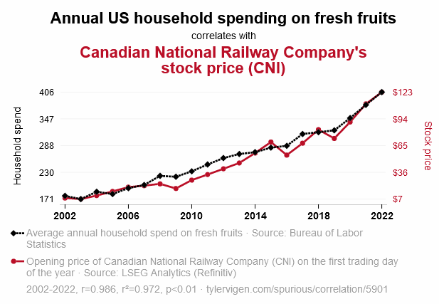
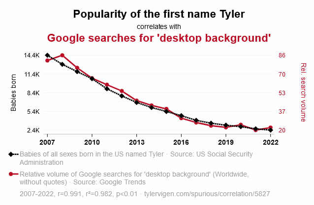

Limitations and directions for future research
Lecture 18
Logistics
Finishing up the project:
Results (component 3):
Due 11:59 pm TOMORROW night. Feedback via email this afternoon (before 5 pm).
Updated grades online by tonight.
Presentations and paper: instructions are up!
- Presentations: Thursday June 20
- Paper: Draft Thursday June 20, final Monday June 24
Today
- Finishing up limitations and causality
- Directions for future research
- Problems with p values
Last time
Limitations: Your work can’t tell you everything!
- Sampling and generalizability: are the people in your sample similar enough to the people in your target population?
- Accuracy: is your data correct?
- Operationalization: did the people who collected the data measure what you would have wanted them to measure in the way you would have wanted it to be measured?
- Causality: do your results tell you something about why something happens? Or just about what is happening?
Association vs causation
. . .
- Association: two things are related
- Causation: one thing drives another thing
Requirements for determining causation
Covariance: There has to be a relationship between two variables
Plausibility and spuriousness: does it pass a gut check? do we know that there isn’t a third variable driving both things?
- Example: Ice cream sales are highly correlated with violent crime rates.
- https://tylervigen.com/spurious-correlations
- Experiments take care of this!
Some real correlations

Some real correlations

Requirements for determining causation
Time order: did the cause happen before the effect?
- Do we know that for sure, or is it ambiguous based on our data?
- Consider reverse causality
- Example: We survey 1000 people and find that people who have desk jobs are less healthy than people who have active jobs.
Exercise Q1
Are these statements causal or associative?
- Higher rates of social media use are correlated with increased likelihood of anxiety and depression among teenagers.
- Social pressure leads people to give answers they know are incorrect.
- People who graduate from college get higher-paying jobs, on average, than people who do not graduate.
Exercise Q1 solutions
Are these statements causal or associative?
Higher rates of social media use are correlated with increased likelihood of anxiety and depression among teenagers.
- Associative
Social pressure leads people to conform to ideas they know are incorrect.
- Causal
People who graduate from college get higher-paying jobs, on average, than people who do not graduate.
- Associative
A brief tangent: The Asch Conformity Line Experiment
- Which of the lines on the right (A, B, or C) is most like the target line?
- What if six people before you all said B?
- Result: 75% of subjects (male-identifying undergraduate students at one university) gave at least one obviously wrong answer over the course of 12 trials. Less than 1% did in a control (no social pressure) condition.

Exercise Q2: Identifying limitations
- Write down a limitation for each of the following:
- Researchers surveyed 1000 British teenagers age 13-17 and found that higher rates of social media use are correlated with increased likelihood of anxiety and depression.
- In 1951, Asch showed that social pressure led undergraduate men to conform to incorrect suggestions.
- Using a longitudinal survey, researchers found that Americans who obtained a college degree between 1995 and 2000 got higher-paying jobs, on average, than people their age who did not obtain a college degree.
Turning limitations into next steps
- Limitations don’t have to be bad. Imperfect data is often still useful.
- Your limitations are often where ideas for future research come from.
- Can you think of ways to address the limitations in a future study?
Identifying other directions for future work
Future research builds on current research
Is there a new population to extend to?
Is there a logical next question to ask now that you know your results?
- Often that question is “why?”
Are there practical consequences of the results, and do those require further research to understand or mitigate?
Exercise Q3: Brainstorming directions for future research
- Write down an idea for a follow up study for each of these:
- Researchers surveyed 1000 British teenagers age 13-17 and found that higher rates of social media use are correlated with increased likelihood of anxiety and depression.
- In 1951, Asch showed that social pressure led undergraduate men to conform to incorrect suggestions.
- Using a longitudinal survey, researchers found that Americans who obtained a college degree between 1995 and 2000 got higher-paying jobs, on average, than people their age who did not obtain a college degree.
Revisiting p values
Exercise Q4: What’s a p value?
- A. A measurement of the effect size in a statistical analysis
- B. The probability of drawing a sample equal to or more extreme than the one you have, assuming the null hypothesis is true.
- C. The probability that the null hypothesis is true.
- D. The probability that the alternative hypothesis is true.
Exercise Q4: What’s a p value?
- A. A measurement of the effect size in a statistical analysis
- B. The probability of drawing a sample equal to or more extreme than the one you have, assuming the null hypothesis is true.
- C. The probability that the null hypothesis is true.
- D. The probability that the alternative hypothesis is true.
Cutoffs
Hypothesis tests (and other statistics): results are either statistically significant or insignificant
Cutoffs:
- Most common: p = 0.05 (1 in 20 chance)
- Sometimes: p = 0.1 (1 in 10), p = 0.01 (1 in 100), p = 0.001 (1 in 1000)
- Often multiple are reported: result is significant at the 0.05 level and 0.01 level but not at the 0.001 level
Cutoffs
Why those cutoffs? Why not something else?
- Absolutely no reason; they’re just nice round numbers (yikes…)
The “file drawer problem”
- Results with a p value of 0.04 are much more likely to be published than results with a p value of 0.06.
- But are those really that different?
Dependence on sample size
We survey 200 people—100 living in North Carolina and 100 living in South Carolina—and ask them how happy they are on a scale of 1 to 10. We find that NC residents are .1 points happier than SC residents (NC mean 8.1, SC mean 8, standard deviation 2 points).
- p = .72—statistically insignificant; fail to reject the null
What if we instead survey 10000 people and find exactly the same thing?
- p = .012—statistically significant!
Errors
- When there’s a cutoff, there’s the possibility of being wrong
- At p = 0.05, you will incorrectly reject the null (Type 1 error) 1 out of every 20 times
- If a type 1 error is dangerous/costly, we should choose a smaller signifiance level (maybe p = 0.01)
- If a type 2 error is more dangerous/costly, we should choose a higher signifiance level (maybe p = 0.10)

Remember
- Project feedback this afternoon
- Grades updated tonight
- Presentations & paper drafts due Thursday
- For next time: read the reading linked on the website